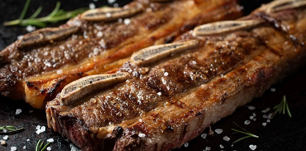

Cómo hacer un buen asado

- 1. Encender el fuego para lograr una buena cantidad de brasas, puede ser tanto con carbón como leña.
- 2. Colocar una buena capa de brasas debajo de la parrilla y calentar los fierros hasta que adquieran temperatura.
- 3. Salar la carne, al tratarse de un corte de pequeño se puede usar sal fina, sin embargo, siempre lo aconsejable es utilizar sal parrillera, la pimienta es a gusto de cada asador.
- 4. El tiempo de cocción dependerá del tamaño de la tira, tanto por el corte que haya realizado el carnicero como por el tamaño del hueso, ya que si es un animal chico los huesos serán pequeños, en cambio si es un animal más grande, también lo serán los huesos.
Aproximadamente, se calcula media hora del lado de los huesos, hasta observar que comienzan a brotar pequeñas gotas de sangre del lado de la carne, es un buen momento para dar vuelta la tira.
Una vez esté del lado de la carne solo dorar la misma para que quede crujiente y con color, bastará con unos diez minutos como mucho y estará listo para salir del fuego y reposar unos minutos.
- 5. Servir y acompañar con papas fritas